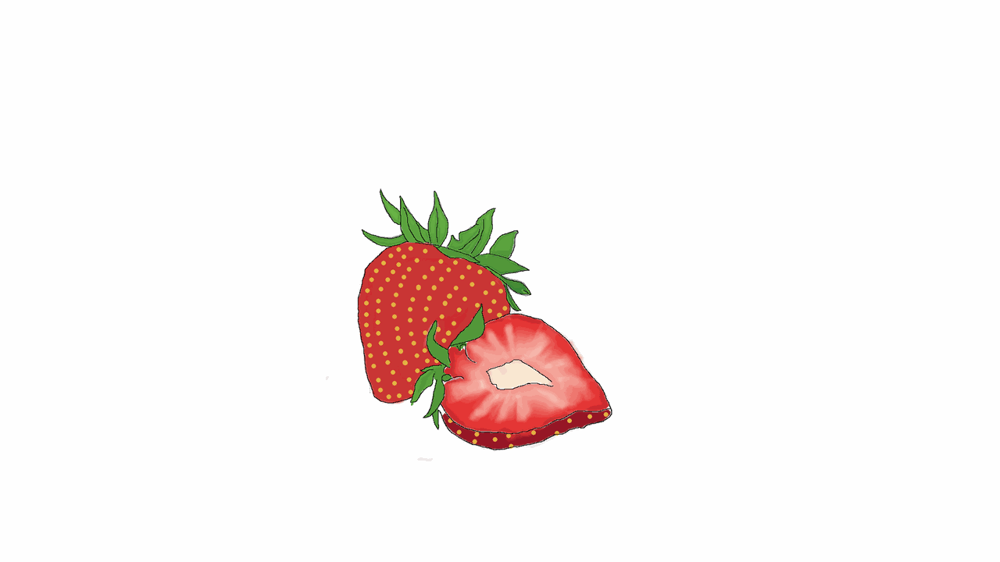
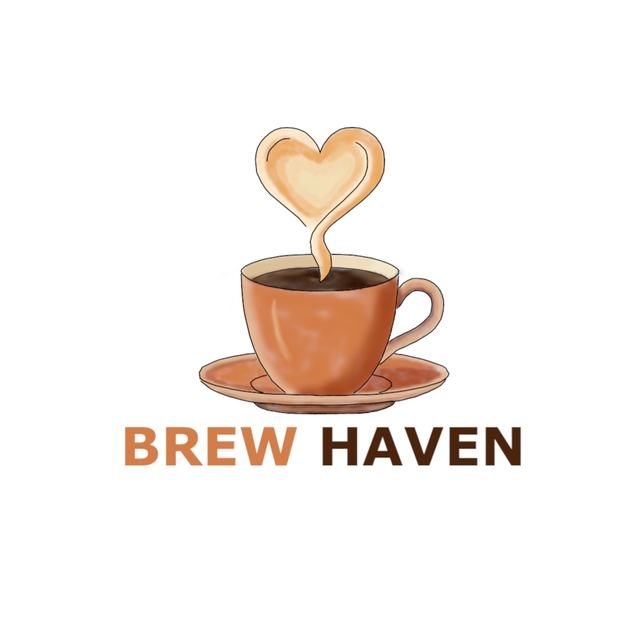
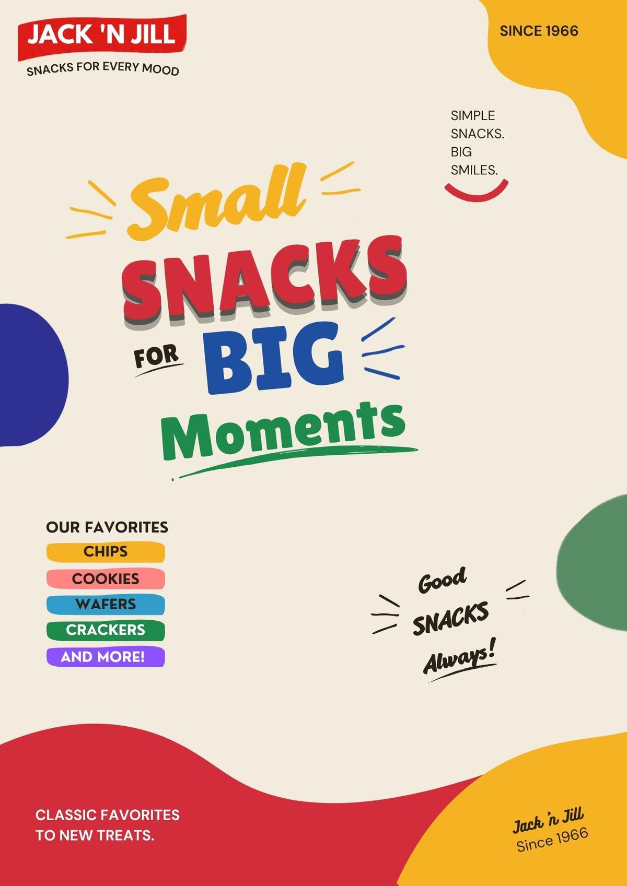
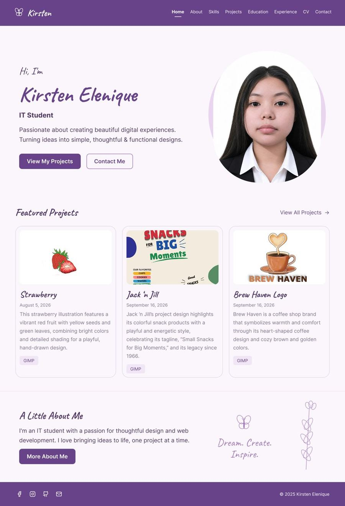

Strawberry
This strawberry illustration features a vibrant red fruit with yellow seeds and green leaves, combining bright colors and detailed shading for a playful, hand-drawn design.
GIMPA collection of my projects and creative work

This strawberry illustration features a vibrant red fruit with yellow seeds and green leaves, combining bright colors and detailed shading for a playful, hand-drawn design.
GIMPA personal brand mark built from my initials, combining a circle and a diamond frame with a bold purple and black monogram.
GIMP
Brew Haven is a coffee shop brand that symbolizes warmth and comfort through its heart-shaped coffee design and cozy brown and golden colors.
GIMP
Jack 'n Jill's project design highlights its colorful snack products with a playful and energetic style, celebrating its tagline, “Small Snacks for Big Moments,” and its legacy since 1966.
Canva
A complete wireframe and visual design for this portfolio website, covering the layout, typography and purple color palette of every page.
FigmaNo projects match your search.